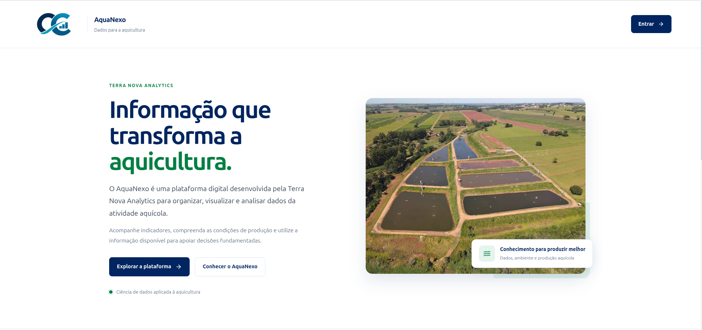
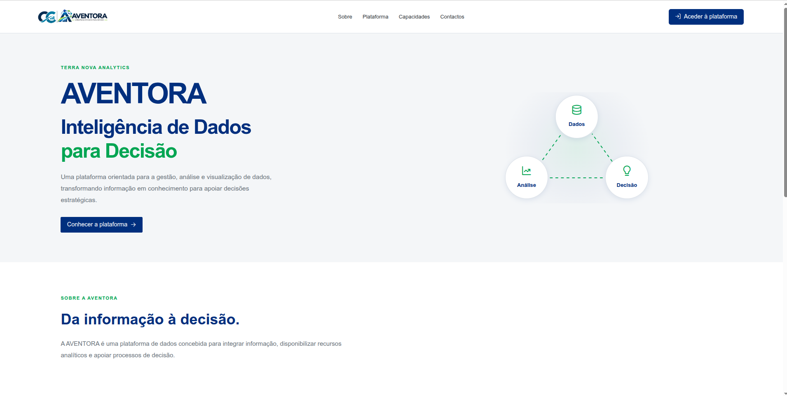

Modelação Matemática e Computacional
Formulação de modelos matemáticos, análise de sistemas, métodos numéricos e simulação computacional.
APLICAÇÕES E DESENVOLVIMENTO
Aplicação de métodos matemáticos, estatísticos e computacionais à análise e resolução de problemas.
Os projetos podem abranger diferentes contextos científicos, tecnológicos e organizacionais. A seleção dos métodos depende da natureza do problema, dos dados disponíveis e dos objetivos definidos.
Formulação de modelos matemáticos, análise de sistemas, métodos numéricos e simulação computacional.
Formulação e resolução de problemas de otimização, programação matemática e apoio quantitativo à decisão.
Análise exploratória, modelação estatística, aprendizagem automática e construção de modelos preditivos.
Desenvolvimento de soluções computacionais para tratamento de dados, cálculo numérico e análise de resultados.
Plataformas digitais e aplicações em desenvolvimento nas áreas de aquacultura, gestão e inteligência de dados.

Plataforma digital orientada para a gestão, integração, visualização e análise de dados de sistemas de aquacultura, com informação de apoio à compreensão das condições de produção e à decisão.

Plataforma orientada para a gestão, análise e visualização de dados, concebida para transformar informação em conhecimento e apoiar processos de decisão em diferentes contextos de atividade.
A natureza do problema permite definir a abordagem matemática, estatística ou computacional mais adequada.
Contactar →